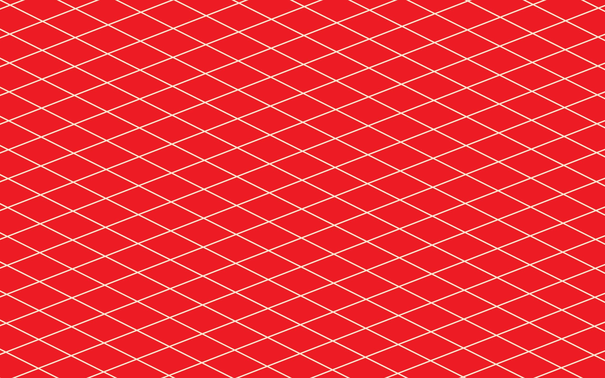
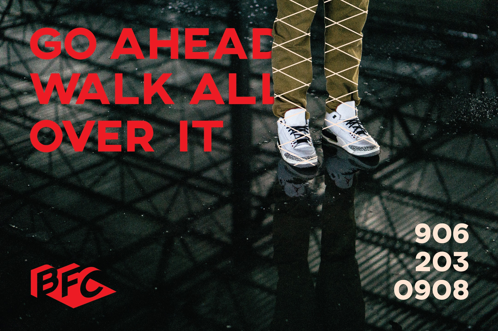
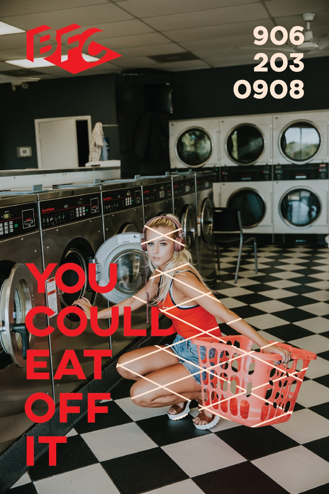

JRS86 recommends putting Pooh on your floors; you'll thank him later.

Eddie 'Pooh' Bowers has been in the family business building houses for his entire life. Only recently has he decided to branch off on his own ventures, but he has the experience, connections, and equipment to get up and running quickly. In the Spring of 2016, Bowers Floor Coverings made its debut.

Eddie didn't have a particular direction in mind, only that his brand look synonymous to the flooring installations he's best known for: bold, clean, sharp, consistent.

I detailed out a crispy new look for Eddie to run with, using a process red over a delicate orange base to create a sunbathed hue warm enough to make your cheeks tingle.